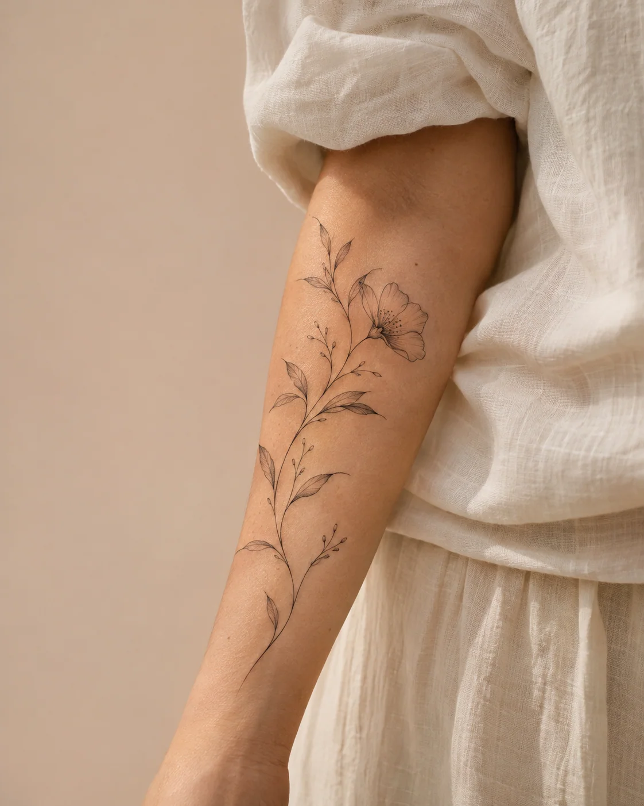

INKAPP / COSTA RICA
Encuentra tu artista.
Portafolios, estilos y artistas de la escena.
INKAPP / COSTA RICA
En la piel
Tatuajes, artistas y cultura urbana
de Costa Rica.
La escena.
Artistas demoELIGE TU LENGUAJE
Explora la escena.
INKAPP / PRIMERA EDICIÓNAntes de la
Antes de la
primera línea.
Una pequeña guía para una decisión que se queda contigo.

✦
Tu artista aún está por aparecer.
Prueba otro estilo o amplía la ubicación para descubrir más perfiles.
Todos los artistas y portafolios de esta demo son ficticios. Las imágenes se crearon para ilustrar la experiencia.